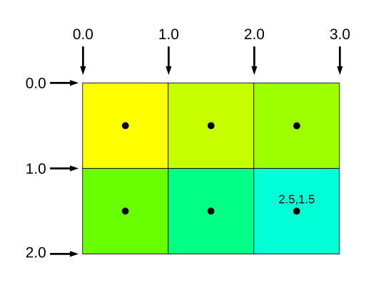

En el artículo anterior, cubrimos algunos conceptos súper básicos sobre WebGPU. En este artículo vamos a repasar lo básico de las variables entre etapas (inter-stage variables).
Las variables entre etapas entran en juego entre un vertex shader (shader de vértices) y un fragment shader (shader de fragmentos).
Cuando un vertex shader devuelve 3 posiciones, se rasteriza un triángulo. El vertex shader puede devolver valores extra en cada una de esas posiciones y, por defecto, esos valores se interpolarán entre los 3 puntos.
Hagamos un pequeño ejemplo. Empezaremos con los shaders del triángulo del artículo anterior. Todo lo que vamos a hacer es cambiar los shaders.
const module = device.createShaderModule({
- label: 'nuestros shaders de triángulo rojo estático',
+ label: 'nuestros shaders de triángulo rgb estático',
code: /* wgsl */ `
+ struct OurVertexShaderOutput {
+ @builtin(position) position: vec4f,
+ @location(0) color: vec4f,
+ };
@vertex fn vs(
@builtin(vertex_index) vertexIndex : u32
- ) -> @builtin(position) vec4f {
+ ) -> OurVertexShaderOutput {
let pos = array(
vec2f( 0.0, 0.5), // superior centro
vec2f(-0.5, -0.5), // inferior izquierda
vec2f( 0.5, -0.5) // inferior derecha
);
+ var color = array<vec4f, 3>(
+ vec4f(1, 0, 0, 1), // rojo
+ vec4f(0, 1, 0, 1), // verde
+ vec4f(0, 0, 1, 1), // azul
+ );
- return vec4f(pos[vertexIndex], 0.0, 1.0);
+ var vsOutput: OurVertexShaderOutput;
+ vsOutput.position = vec4f(pos[vertexIndex], 0.0, 1.0);
+ vsOutput.color = color[vertexIndex];
+ return vsOutput;
}
- @fragment fn fs() -> @location(0) vec4f {
- return vec4f(1, 0, 0, 1);
+ @fragment fn fs(fsInput: OurVertexShaderOutput) -> @location(0) vec4f {
+ return fsInput.color;
}
`,
});
En primer lugar, declaramos un struct. Esta es una forma sencilla de coordinar las variables entre etapas entre un vertex shader y un fragment shader.
struct OurVertexShaderOutput {
@builtin(position) position: vec4f,
@location(0) color: vec4f,
};
Luego declaramos que nuestro vertex shader devuelve una estructura de este tipo:
@vertex fn vs(
@builtin(vertex_index) vertexIndex : u32
- ) -> @builtin(position) vec4f {
+ ) -> OurVertexShaderOutput {
A continuación, creamos un array de 3 colores.
var color = array<vec4f, 3>(
vec4f(1, 0, 0, 1), // rojo
vec4f(0, 1, 0, 1), // verde
vec4f(0, 0, 1, 1), // azul
);
Luego, en lugar de devolver solo un vec4f para la posición, declaramos una instancia de la estructura, la rellenamos y la devolvemos:
- return vec4f(pos[vertexIndex], 0.0, 1.0); + var vsOutput: OurVertexShaderOutput; + vsOutput.position = vec4f(pos[vertexIndex], 0.0, 1.0); + vsOutput.color = color[vertexIndex]; + return vsOutput;
En el fragment shader, declaramos que toma uno de estos structs como argumento de la función:
@fragment fn fs(fsInput: OurVertexShaderOutput) -> @location(0) vec4f {
return fsInput.color;
}
Finalmente devolviendo el color.
Si ejecutamos eso veremos que, cada vez que la GPU llamó a nuestro fragment shader, le pasó un color que fue interpolado entre los 3 puntos.
Las variables entre etapas se utilizan con mayor frecuencia para interpolar coordenadas de textura a través de un triángulo, lo que cubriremos en el artículo sobre texturas. Otro uso común es interpolar normales a través de un triángulo, lo que cubriremos en el primer artículo sobre iluminación.
locationUn punto importante, como casi todo en WebGPU, es que la conexión entre el vertex shader y el fragment shader es por índice. Para las variables entre etapas, se conectan por el índice de ubicación (location index).
Para ver a qué me refiero, cambiemos solo el fragment shader para que tome un parámetro vec4f en la location(0) en lugar del struct:
@fragment fn fs(@location(0) color: vec4f) -> @location(0) vec4f {
return color;
}
Al ejecutarlo vemos que sigue funcionando.
@builtin(position)Eso ayuda a señalar otra peculiaridad. Nuestro shader original que usaba el mismo struct tanto en el vertex shader como en el fragment shader tenía un campo llamado position pero no tenía una ubicación (location). En su lugar, estaba declarado como @builtin(position).
struct OurVertexShaderOutput {
* @builtin(position) position: vec4f,
@location(0) color: vec4f,
};
Ese campo NO es una variable entre etapas. En su lugar, es un builtin (integrado). Resulta que @builtin(position) tiene un significado diferente en un vertex shader frente a un fragment shader. De hecho, una mejor manera de pensarlo es que los vertex shaders y los fragment shaders son solo 2 funciones diferentes que casualmente tienen un parámetro con el mismo nombre.
Imagina que tenemos 2 funciones de JavaScript:
// Dibujar un círculo de tamaño radius, en position: [x, y]
function drawCircle({ ctx, position, radius }) {
// de CanvasRenderingContext2D
ctx.beginPath();
ctx.arc(...position, radius, 0, Math.PI * 2);
ctx.fill();
}
// Devolver el índice de un elemento en un array comenzando en position
function findIndex({ array, position, value }) {
return array.indexOf(value, position);
}
Ambas funciones anteriores tienen un parámetro llamado position. Generalmente no hay confusión entre las dos. Es similar con los vertex shaders y los fragment shaders. Sus builtins son diferentes e independientes; cada uno de ellos simplemente tiene un @builtin llamado position y, al compilar cada entry point del shader, el código WGSL se lee solo para ese entry point.
En un vertex shader, @builtin(position) es la coordenada que proporcionas como salida y que la GPU utiliza para dibujar triángulos/líneas/puntos.
En un fragment shader, @builtin(position) es una entrada. Es la coordenada de píxel del píxel para el cual se le pide al fragment shader que calcule un color o valor en ese momento.
Las coordenadas de píxel se especifican por los bordes de los píxeles. Los valores proporcionados al fragment shader son las coordenadas del centro del píxel.
Si la textura en la que estuviéramos dibujando fuera de 3x2 píxeles de tamaño, estas serían las coordenadas:

Podemos cambiar nuestro shader para usar esta posición. Por ejemplo, dibujemos un tablero de ajedrez (checkerboard).
const module = device.createShaderModule({
label: 'nuestros shaders de triángulo con tablero de ajedrez estático',
code: /* wgsl */ `
struct OurVertexShaderOutput {
@builtin(position) position: vec4f,
- @location(0) color: vec4f,
};
@vertex fn vs(
@builtin(vertex_index) vertexIndex : u32
) -> OurVertexShaderOutput {
let pos = array(
vec2f( 0.0, 0.5), // superior centro
vec2f(-0.5, -0.5), // inferior izquierda
vec2f( 0.5, -0.5) // inferior derecha
);
- var color = array<vec4f, 3>(
- vec4f(1, 0, 0, 1), // rojo
- vec4f(0, 1, 0, 1), // verde
- vec4f(0, 0, 1, 1), // azul
- );
var vsOutput: OurVertexShaderOutput;
vsOutput.position = vec4f(pos[vertexIndex], 0.0, 1.0);
- vsOutput.color = color[vertexIndex];
return vsOutput;
}
@fragment fn fs(fsInput: OurVertexShaderOutput) -> @location(0) vec4f {
- return fsInput.color;
+ let rojo = vec4f(1, 0, 0, 1);
+ let cian = vec4f(0, 1, 1, 1);
+
+ let grid = vec2u(fsInput.position.xy) / 8;
+ let checker = (grid.x + grid.y) % 2 == 1;
+
+ return select(rojo, cian, checker);
}
`,
});
El código anterior toma fsInput.position, que fue declarada como @builtin(position), y convierte sus coordenadas xy a un vec2u, que son 2 enteros sin signo. Luego los divide por 8, dándonos una cuenta que aumenta cada 8 píxeles. Después suma las coordenadas de cuadrícula x e y, calcula el módulo 2 y compara el resultado con 1. Esto nos dará un booleano que es verdadero o falso para cada otro entero. Finalmente, usa la función select de WGSL que, dados 2 valores, selecciona uno u otro basándose en una condición booleana. En JavaScript, select se escribiría así:
// Si condition es false devuelve `a`, de lo contrario devuelve `b` select = (a, b, condition) => condition ? b : a;
Incluso si no usas @builtin(position) en un fragment shader, es conveniente que esté ahí porque significa que podemos usar el mismo struct tanto para un vertex shader como para un fragment shader. Una lección importante es que el campo position del struct en el vertex shader frente al fragment shader es totalmente independiente. Son variables completamente diferentes.
Como se señaló anteriormente, para las variables entre etapas, lo único que importa es la @location(?). Por lo tanto, no es raro declarar diferentes structs para la salida de un vertex shader frente a la entrada de un fragment shader.
Para que esto quede más claro, el hecho de que tanto el vertex shader como el fragment shader estén en el mismo string en nuestros ejemplos es solo una conveniencia. También podríamos dividirlos en módulos separados:
- const module = device.createShaderModule({
- label: 'shaders de triángulo con tablero de ajedrez estático',
+ const vsModule = device.createShaderModule({
+ label: 'triángulo estático',
code: /* wgsl */ `
struct OurVertexShaderOutput {
@builtin(position) position: vec4f,
};
@vertex fn vs(
@builtin(vertex_index) vertexIndex : u32
) -> OurVertexShaderOutput {
let pos = array(
vec2f( 0.0, 0.5), // superior centro
vec2f(-0.5, -0.5), // inferior izquierda
vec2f( 0.5, -0.5) // inferior derecha
);
var vsOutput: OurVertexShaderOutput;
vsOutput.position = vec4f(pos[vertexIndex], 0.0, 1.0);
return vsOutput;
}
+ `,
+ });
+
+ const fsModule = device.createShaderModule({
+ label: 'tablero de ajedrez',
code: /* wgsl */ `
- @fragment fn fs(fsInput: OurVertexShaderOutput) -> @location(0) vec4f {
+ @fragment fn fs(@builtin(position) pixelPosition: vec4f) -> @location(0) vec4f {
let rojo = vec4f(1, 0, 0, 1);
let cian = vec4f(0, 1, 1, 1);
- let grid = vec2u(fsInput.position.xy) / 8;
+ let grid = vec2u(pixelPosition.xy) / 8;
let checker = (grid.x + grid.y) % 2 == 1;
return select(rojo, cian, checker);
}
`,
});
Y tendríamos que actualizar la creación de nuestro pipeline para usar estos:
const pipeline = device.createRenderPipeline({
label: 'pipeline de triángulo con tablero de ajedrez estático',
layout: 'auto',
vertex: {
- module,
+ module: vsModule,
},
fragment: {
- module,
+ module: fsModule,
targets: [{ format: presentationFormat }],
},
});
Y esto funciona igual:
El punto es que el hecho de que ambos shaders estén en el mismo string en la mayoría de los ejemplos de WebGPU es solo una conveniencia. En realidad, primero WebGPU analiza el WGSL para asegurarse de que sea sintácticamente correcto. Luego, WebGPU mira cada entryPoint que especificas por separado. Mira las partes que cada entryPoint referencia y nada más.
Los strings compartidos son útiles porque múltiples shaders pueden compartir cosas como estructuras, ubicaciones de binding y group, constantes y funciones. Pero, desde el punto de vista de WebGPU, es como si hubieras duplicado todo, una vez para cada entryPoint.
Nota: No es tan común generar un tablero de ajedrez usando el @builtin(position). Los tableros de ajedrez u otros patrones se implementan con mucha más frecuencia usando texturas. De hecho, verás un problema si cambias el tamaño de la ventana. Como el tablero de ajedrez se basa en las coordenadas de píxel del canvas, es relativo al canvas, no relativo al triángulo.
Vimos anteriormente que las variables entre etapas, las salidas de un vertex shader, se interpolan cuando se pasan al fragment shader. Hay 2 conjuntos de ajustes que pueden modificar el comportamiento: el tipo de interpolación (interpolation type) y el muestreo de interpolación (interpolation sampling). Configurarlos a algo distinto de los valores por defecto no es muy común, pero hay casos de uso que se cubrirán en otros artículos.
Tipo de interpolación:
perspective: Los valores se interpolan de manera correcta según la perspectiva (por defecto)linear: Los valores se interpolan de manera lineal, sin corrección de perspectivaflat: Los valores no se interpolan. El muestreo de interpolación no se usa con la interpolación flatMuestreo de interpolación:
center: La interpolación se realiza en el centro del píxel. (por defecto)centroid: La interpolación se realiza en un punto que se encuentra dentro de todas las muestras cubiertas por el fragmento dentro de la primitiva actual. Este valor es el mismo para todas las muestras en la primitiva.sample: La interpolación se realiza por muestra. El fragment shader se invoca una vez por muestra cuando se aplica este atributo.first: Se usa solo con type = flat. (por defecto) El valor proviene del primer vértice de la primitiva que se está dibujando.either: Se usa solo con type = flat. El valor proviene del primer o del último vértice de la primitiva que se está dibujando. Cuál de ellos depende de la implementación.Especificas estos como atributos, por ejemplo:
@location(2) @interpolate(linear, center) myVariableFoo: vec4f; @location(3) @interpolate(flat) myVariableBar: vec4f;
Ten en cuenta que si la variable entre etapas es de tipo entero, entonces debes establecer su interpolación a flat.
Si estableces el tipo de interpolación a flat, por defecto, el valor pasado al fragment shader es el valor de la variable entre etapas para el primer vértice de ese triángulo. Para la mayoría de los casos de uso de flat, deberías elegir either. Cubriremos por qué en otro artículo.
En el siguiente artículo cubriremos los uniforms como otra forma de pasar datos a los shaders.